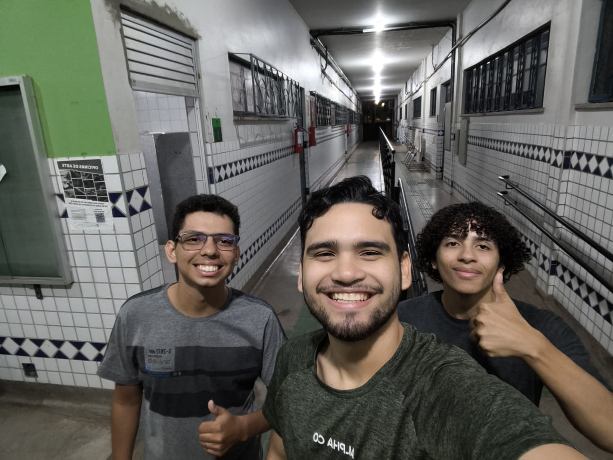

Equipe
Trio responsável pela pesquisa, desenvolvimento e escrita deste site.

-
João Lucas Fernandes da Silva
Tecnólogo em Análise e Desenvolvimento de Sistemas — IFRR
-
Alexandre Silva da Conceição
Tecnólogo em Análise e Desenvolvimento de Sistemas — IFRR
-
Davi Almeida de Oliveira
Tecnólogo em Análise e Desenvolvimento de Sistemas — IFRR
Qual é o foco principal do design centrado no humano?
O foco principal do design centrado no humano é colocar as pessoas — suas necessidades, capacidades, limitações e contexto de uso — no centro de todo o processo de desenvolvimento de um sistema interativo. Em vez de partir apenas da tecnologia ou das preferências da equipe de desenvolvimento, o objetivo é entender profundamente quem vai usar o produto e por quê, para então projetar soluções que sejam realmente úteis, utilizáveis e satisfatórias para essas pessoas.
Isso significa envolver os usuários desde as fases iniciais do projeto (e não apenas ao final, em testes), buscando aumentar a eficácia e a eficiência do sistema, melhorar o bem-estar e a satisfação de quem o utiliza, e reduzir possíveis efeitos negativos sobre a saúde, a segurança e o desempenho humano durante o uso.
Quais são os três princípios do design centrado no humano mencionados na aula?
De forma geral, os princípios centrais apresentados são:
-
Envolvimento ativo dos usuários
Os usuários reais (ou representantes deles) participam ativamente do processo de design, compartilhando suas necessidades, opiniões e expectativas em vez de terem essas informações apenas presumidas pela equipe de desenvolvimento.
-
Processo iterativo
O design é construído em ciclos de idealização, prototipagem, avaliação e refinamento, repetidos quantas vezes forem necessárias até que a solução atenda de fato às necessidades identificadas.
-
Equipes multidisciplinares
O projeto é conduzido por equipes com diferentes formações e perspectivas (design, computação, psicologia, ergonomia, entre outras), garantindo uma visão mais completa do problema e da experiência do usuário.
Como o Design Thinking se relaciona com o design centrado no humano?
O Design Thinking é uma abordagem/metodologia que coloca em prática os valores do design centrado no humano. Ele estrutura o processo criativo em etapas como empatia, definição do problema, ideação, prototipagem e teste, sempre partindo da compreensão profunda das pessoas para quem se está projetando.
Ou seja, enquanto o design centrado no humano é a filosofia ou o conjunto de princípios que orienta o processo (colocar o usuário no centro), o Design Thinking oferece as ferramentas e as etapas práticas para transformar essa filosofia em soluções concretas, testáveis e refinadas de forma iterativa junto aos usuários reais.
Em qual contexto podemos usar a norma ISO 9241-210?
A ISO 9241-210 pode ser usada como referência sempre que uma equipe está desenvolvendo ou avaliando um sistema interativo — sites, aplicativos, softwares, sistemas embarcados, entre outros — e deseja seguir um processo estruturado de design centrado no ser humano ao longo de todo o ciclo de vida do produto, desde a concepção até a manutenção.
Ela fornece diretrizes e requisitos sobre como planejar e conduzir esse processo (entender o contexto de uso, especificar requisitos dos usuários, produzir soluções de projeto e avaliá-las), servindo de apoio tanto para equipes de UX/UI quanto para gestores de projeto que precisam justificar e padronizar práticas de usabilidade e experiência do usuário dentro da organização.
Como ocorre a integração do design centrado no humano com métodos ágeis?
A integração ocorre encaixando as atividades de design centrado no humano dentro dos ciclos curtos e iterativos característicos de métodos ágeis, como o Scrum. Em vez de fazer toda a pesquisa com usuários e o design de uma só vez no início do projeto (como em modelos mais tradicionais), as atividades de entender o usuário, prototipar e testar são distribuídas ao longo das sprints, acontecendo em paralelo ou logo antes do desenvolvimento das funcionalidades.
Assim, pesquisas rápidas com usuários, protótipos de baixa fidelidade e testes de usabilidade acontecem continuamente a cada sprint, alimentando o backlog e permitindo ajustes constantes com base em feedback real. Essa combinação une a flexibilidade e a entrega contínua dos métodos ágeis com o foco na experiência do usuário do design centrado no humano.
Quais são as etapas de elaboração de um projeto centrado no usuário?
-
Entender e especificar o contexto de uso
Identificar quem são os usuários, quais tarefas irão realizar, com quais equipamentos e em qual ambiente físico, social e organizacional o sistema será utilizado.
-
Especificar os requisitos dos usuários
A partir do contexto levantado, definir claramente as necessidades, objetivos e requisitos que a solução precisa atender para ser considerada útil e utilizável.
-
Produzir soluções de projeto
Desenvolver protótipos — desde esboços de baixa fidelidade até versões mais elaboradas — que representem possíveis soluções para os requisitos identificados.
-
Avaliar o projeto com os usuários
Testar as soluções propostas com usuários reais, coletando feedback sobre usabilidade e satisfação para verificar se os requisitos foram atendidos.
-
Iterar até atingir a solução adequada
Repetir o ciclo de prototipagem e avaliação quantas vezes forem necessárias, refinando a solução a cada rodada até que ela atenda satisfatoriamente às necessidades dos usuários.